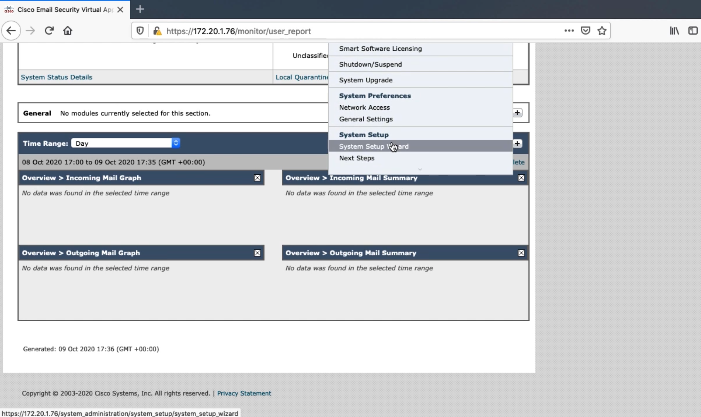
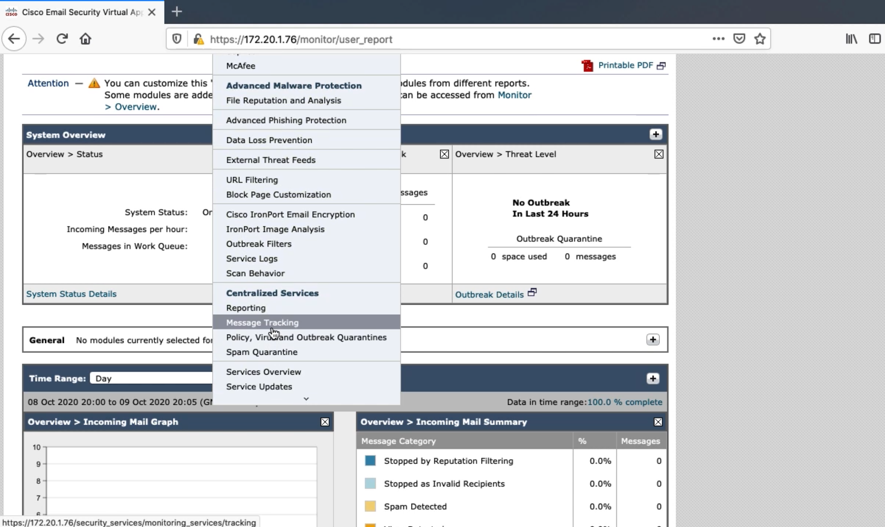
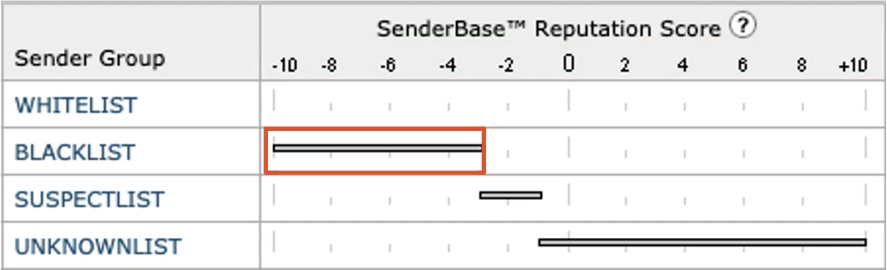
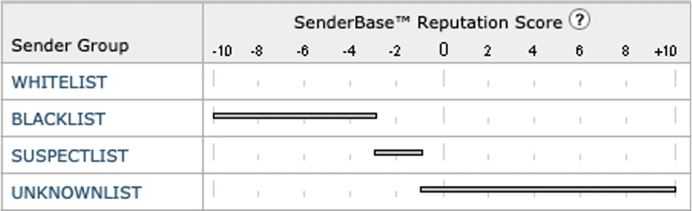
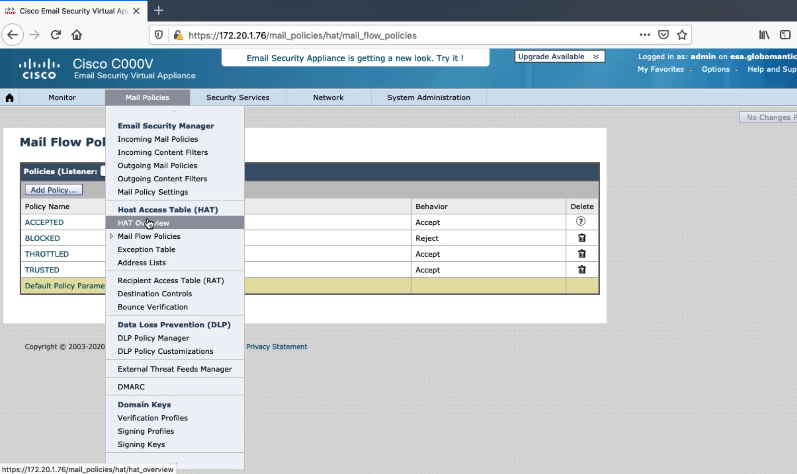
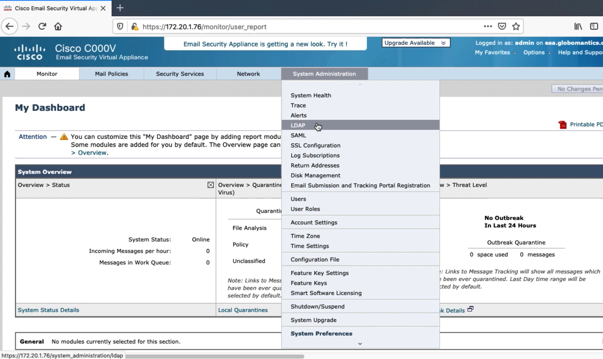
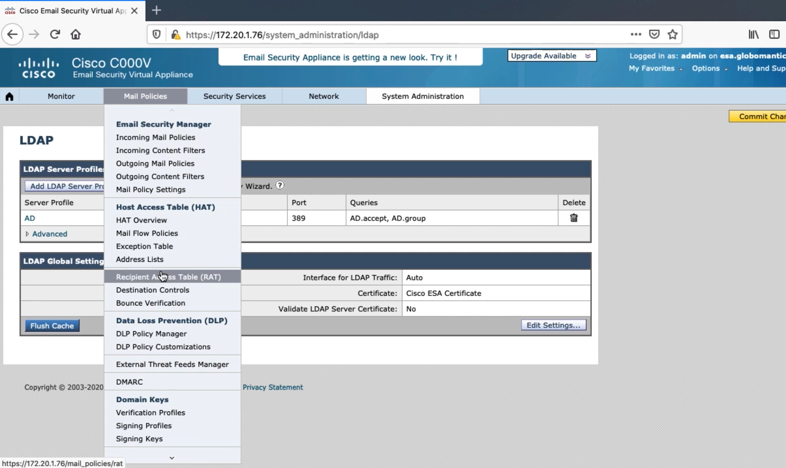

Configuring the ESA to Accept Email
Configuring Interfaces to Send and Receive Email


Listeners and Host Access Tables
Listeners
Listeners listen on the specified SMTP port for SMTP traffic
Public Listener
Receives emails that are from other organizations with your org as the recipient
Public listener will only accept emails if the recipient domain is explicitly defined
Private Listener
Receives emails that are from your org with outside organizations as the recipient


Cisco sees over 300 billion emails daily
Determine the likely hood that a sender is malicious or legitimate
IP Address of mail server
Reverse DNS lookup
Determine network owner
Organization controlling mail servers should be using IP space
SMTP Deep Dive
SMTP 3-Digit Codes
2 - Success - received, accepted and understood by the server
3 - Redirection - more information is required
4 - Temporary failure failure should be easily resolved
5 - Permanent failure - failure is unlikely to be resolved
SMTP Envelope
<< 220 email.carvedrock.com SMTP
>> HELO email.globomantics.com
<< 250 email.carvedrock.com
>> MAIL FROM <kinda@globomantics.com>
<< 250 sender kinda@globomantics.com> ok
>> RCPT TO: <angie@carvedrock.com>
<< 250 recipient <angie@carvedrock.com> ok
SMTP Headers
>> DATA
<< 354 go ahead
>> From: kinda <kinda@globomantics.com>
>> To: angie<angie@carvedrock.com>
>> Subject: Hello?
>> Date tue, 8 October 2019 21:28:30 -0800
X-headers can be used to send additional information in an email, but they are not required
SMTP Body
>> Pluralsight has some of the best training
>> kinda
<< 250 ok
>> QUIT
<< 221 email.carvedrock.com
Mail Flow Policies
Mail Flow Policy Behaviors
Relay - Used to forward outbound emails from Globomantics
Relay is the only behavior that does not require an associated Recipient Access Table (RAT)
Accept - Used to accept incoming email from senders
Reject - SMTP connection is started, but 400 or 500 code is sent
TCP Refuse - No SMTP connection, sender may continue to try again
Continue - No definitive action, try to match another sender group


Integrating the ESA with LDAP and Recipient Access Table Deep Dive
Integrating ESA with LDAP
ESA will block emails if the recipient doesn’t exist
Once LDAP is configured, by default all recipients will be verified


Place the more specific condition at the top, so it is matched before a more generalized condition